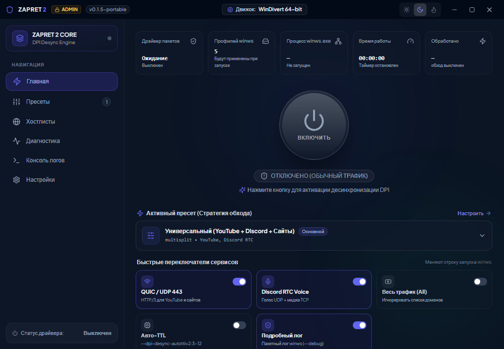
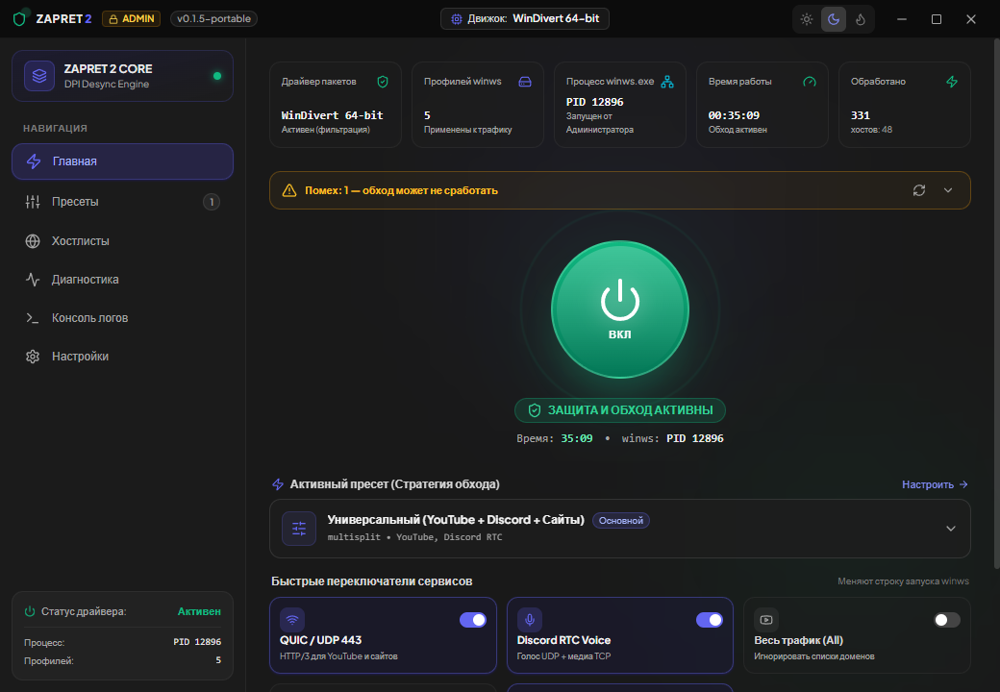
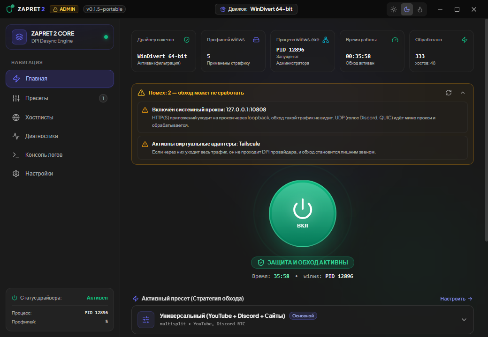
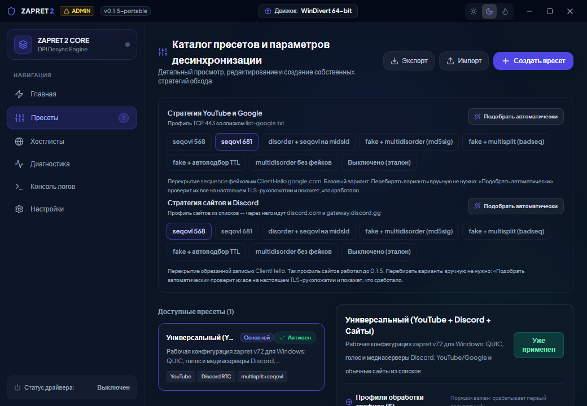
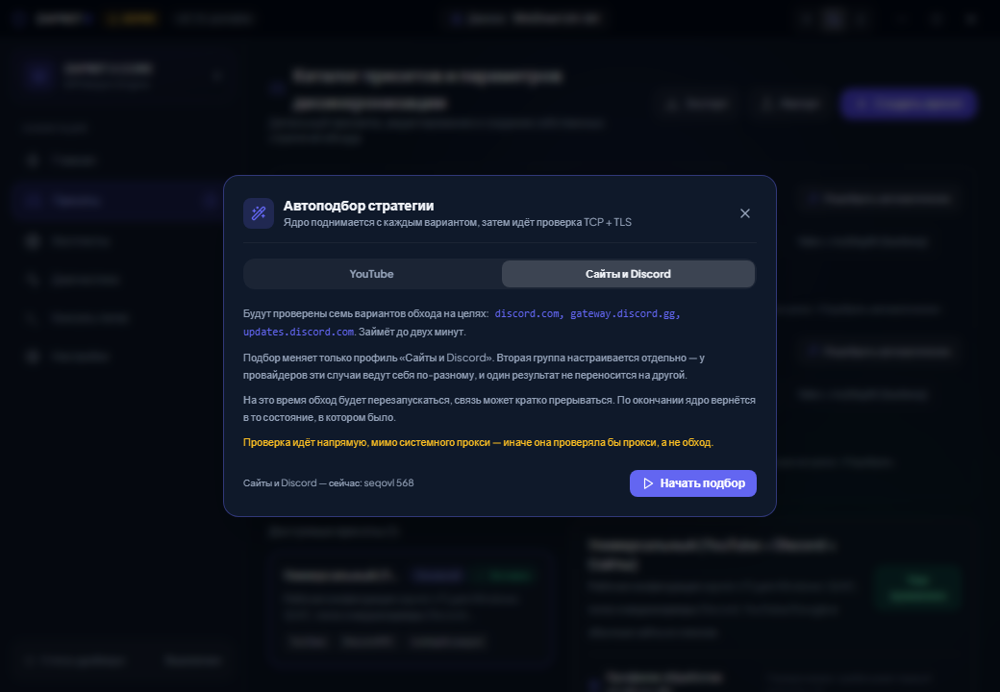
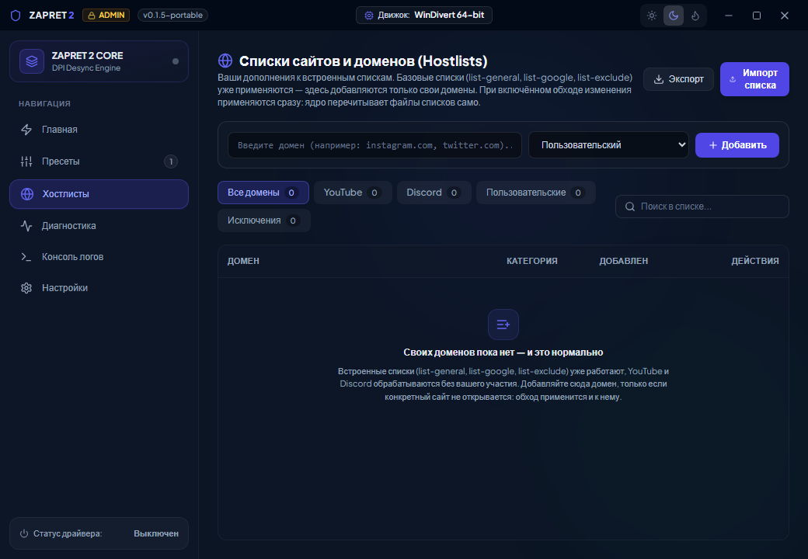
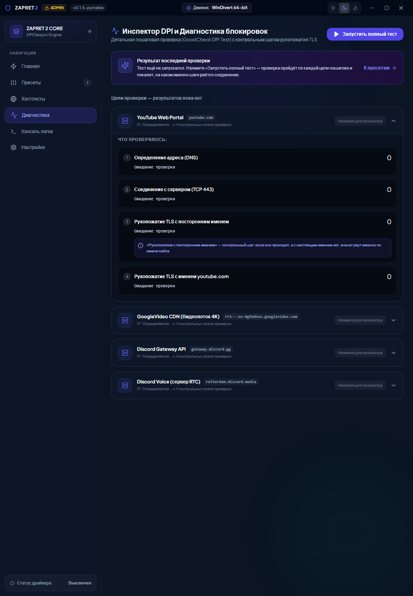
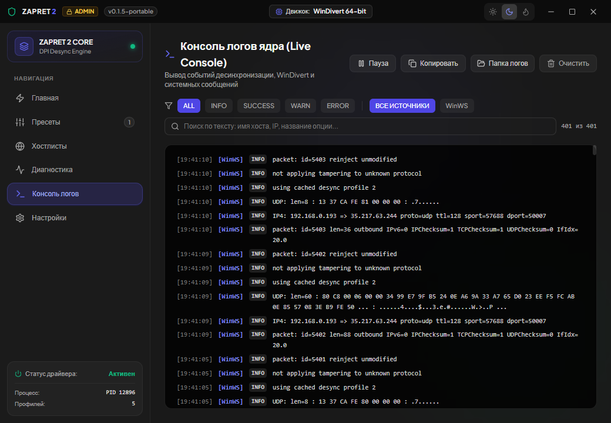
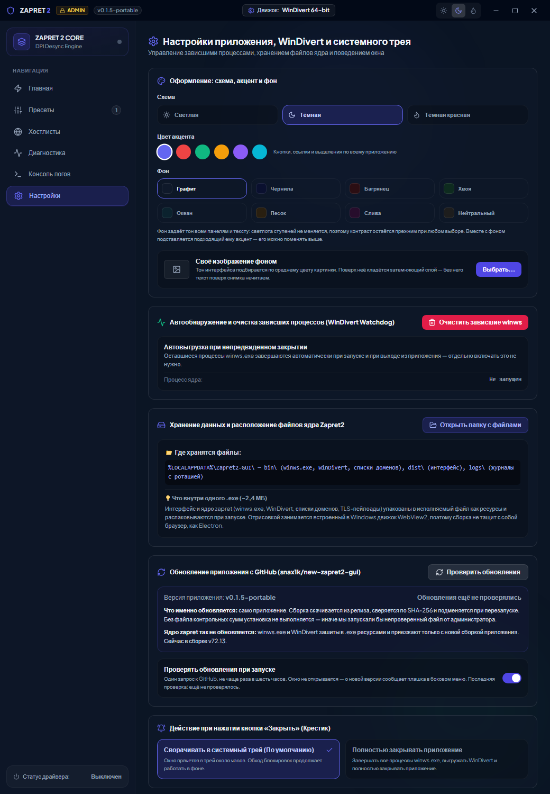
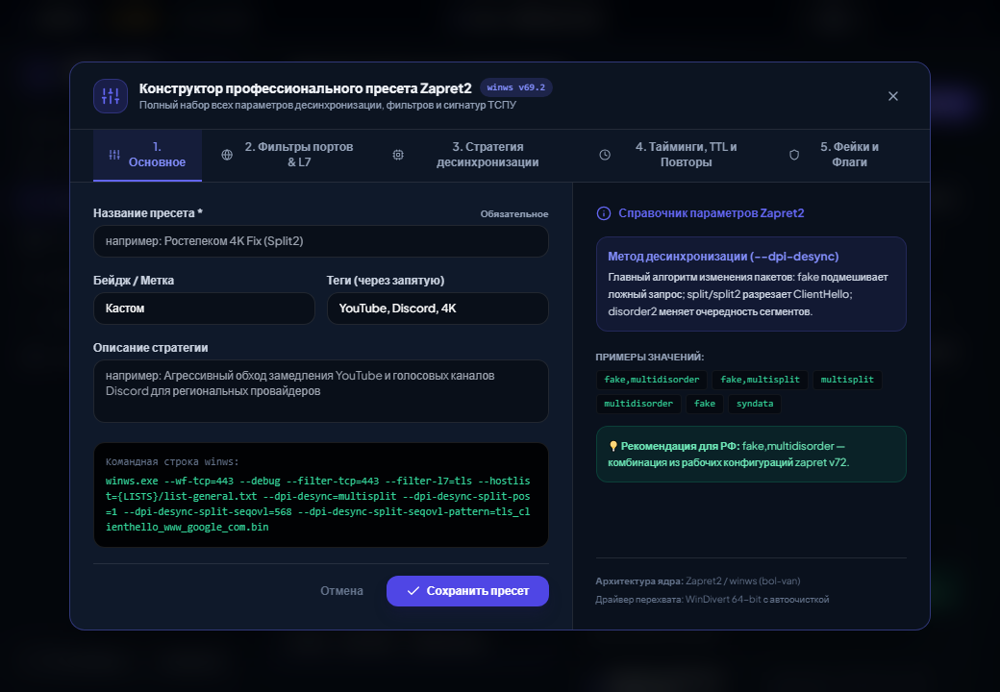

И чего от неё ждать не надо.
Провайдер видит, к какому сайту вы обращаетесь: имя хоста передаётся в открытом виде в самом начале защищённого соединения. Оборудование глубокой проверки трафика (DPI) читает это имя и рвёт соединение, если сайт в списке заблокированных.
Программа меняет форму первых пакетов так, что DPI не может собрать из них имя сайта: режет их на части в неожиданных местах, меняет порядок, подмешивает безобидный пакет-приманку. Сервер на другом конце собирает всё правильно и отвечает как обычно.
Это не VPN и не прокси. Трафик идёт напрямую к сайту, ваш IP-адрес не меняется, посредников нет. Скорость не падает: данные никуда не перенаправляются. Анонимности программа тоже не даёт — она решает ровно одну задачу, обход блокировки по имени сайта.
Работает это не везде одинаково. Способов «сломать» разбор пакетов много, и какой сработает — зависит от оборудования конкретного провайдера. Поэтому в программе есть автоподбор: он перебирает варианты на живом соединении и показывает, какой прошёл.
| winws.exe | ядро обхода из проекта bol-van/zapret — оно и выполняет всю работу с пакетами |
| WinDivert | системный драйвер, который даёт ядру доступ к сетевым пакетам. Из-за него нужны права администратора |
| Интерфейс | то, что вы видите: настройка, запуск, журнал, диагностика |
Всё это упаковано в один файл .exe размером около 2,4 МБ.
Отрисовкой занимается встроенный в Windows движок WebView2, поэтому сборка
не тащит с собой браузер.
Программа портативная: установщика нет, всё в одном файле.
Zapret2-GUI-v0.1.5-portable.exe со страницы релизов в репозитории.
Рядом со сборкой в релизе лежит файл SHA256SUMS.txt. Сверьте —
это тридцать секунд, а гарантия, что файл скачался целиком и не подменён по
дороге. В PowerShell:
Get-FileHash .\Zapret2-GUI-v0.1.5-portable.exe -Algorithm SHA256
Строка Hash должна совпасть с той, что в SHA256SUMS.txt.
Такое бывает, и вот честное объяснение. Сборка не подписана сертификатом (это платная процедура), при запуске распаковывает из себя драйвер и запускает его с правами администратора. Для эвристики машинного обучения это подозрительный набор признаков сам по себе, независимо от того, что внутри.
Вердикты вида Trojan:Win32/Wacatac.H!ml — именно такой случай.
Суффикс !ml означает «решила модель», а не «найдена сигнатура
известного вируса».
Что делать. Сверьте контрольную сумму с релизом — так вы убедитесь, что файл именно тот. Добавлять программу в исключения антивируса или отключать защиту — ваше решение и ваша ответственность; руководство к этому не призывает. Если доверия нет, исходный код открыт, сборку можно собрать самостоятельно.
Всё, что нужно для обычной работы, собрано здесь.

Большая кнопка в середине включает и выключает обход. Под ней — состояние словами, чтобы не гадать по цвету.
| Драйвер пакетов | загружен ли WinDivert. «Активен (фильтрация)» — ядро видит трафик |
| Профилей winws | сколько правил обработки применено. В стандартном пресете их пять |
| Процесс winws.exe | номер процесса ядра и от кого он запущен |
| Время работы | сколько обход работает без перезапуска |
| Обработано | сколько пакетов изменено и для скольких разных сайтов |
Счётчик «Обработано» — самая честная проверка того, что обход действительно работает. Если он стоит на нуле, значит ядро запущено, но ни одного пакета через себя не пропустило: скорее всего трафик идёт мимо — через прокси или VPN. См. раздел «Если не работает».

Ниже на том же экране — переключатели, меняющие строку запуска ядра:
Начните отсюда, прежде чем менять стратегии.
Программа сама проверяет окружение и показывает найденные помехи жёлтой плашкой на главном экране. Разверните её стрелкой справа.

Самая частая причина. Если в Windows включён прокси, приложения отдают ему
HTTP и HTTPS через внутренний адрес 127.0.0.1. Такой трафик не
выходит наружу в том виде, в каком его ждёт ядро, и обход его просто не видит.
Прокси может поднять VPN-клиент, ускоритель игр или расширение браузера —
часто незаметно для вас.
Проверить: Параметры Windows → Сеть и Интернет → Прокси.
Если трафик уходит в туннель, он не проходит через оборудование провайдера, и обходить нечего. Выключите VPN и проверьте заново.
Порядок действий именно такой:
Последний пункт пропускают чаще всего, а он обязателен. У Discord свой кэш адресов внутри процесса: пока программа не перезапущена, она продолжает ломиться по старым данным, даже если обход уже настроен верно.
Что менять, если сайт по-прежнему не открывается.

Стратегия — это конкретный способ поломать разбор пакетов. Их несколько, и работают они у разных провайдеров по-разному: где-то проходит перекрытие последовательности, где-то только перестановка сегментов.
Групп две, и настраиваются они раздельно. Это не формальность: у одного и того же провайдера для YouTube может работать один вариант, а для Discord — совсем другой. Результат одной группы на другую не переносится.
Перебирать вручную не нужно. Автоподбор поднимает ядро с каждым вариантом и проверяет настоящее защищённое соединение с нужными сайтами.

Список сайтов, к которым применяется обход.

В сборку встроены готовые списки: отдельно для сервисов Google и YouTube, отдельно общий список сайтов, отдельно исключения. YouTube и Discord обрабатываются без вашего участия.
Добавлять домен сюда имеет смысл в одном случае: конкретный сайт не открывается, а в списках его нет. Изменения применяются сразу — ядро перечитывает файлы само, перезапускать обход не нужно.
Показывает, на каком именно шаге рвётся соединение.

Смысл шагов:
| 1. Адрес (DNS) | удалось ли узнать адрес сайта. Ошибка здесь — проблема с DNS, а не с блокировкой |
| 2. Соединение | отвечает ли сервер вообще. Обрыв здесь означает блокировку по адресу, обходом это не лечится |
| 3. Контрольный шаг | рукопожатие с посторонним именем сайта |
| 4. Настоящее имя | рукопожатие с именем нужного сайта |
Третий шаг — ключ ко всему. Если рукопожатие с посторонним именем проходит, а с настоящим нет, значит рвут именно по имени сайта — это тот случай, который программа и умеет обходить. Если не проходят оба, причина другая.
Что происходит на самом деле.

Вверху фильтры по важности и по источнику сообщений, рядом поиск по тексту — можно искать по имени сайта, адресу или названию параметра. Кнопка «Пауза» останавливает прокрутку, «Копировать» кладёт видимые строки в буфер обмена.
Файл лежит здесь:
%LOCALAPPDATA%\Zapret2-GUI\logs\zapret2.log
Кнопка «Папка логов» открывает этот каталог сразу. Перед отправкой посмотрите файл: там видны имена сайтов, которые вы открывали, и адреса вашей сети.

Три схемы, шесть цветов акцента и восемь вариантов фона. Можно поставить фоном своё изображение — тон интерфейса подберётся по среднему цвету картинки.
Если программа закрылась аварийно, ядро может остаться в памяти и продолжить обрабатывать трафик. Такие процессы завершаются автоматически при следующем запуске и при выходе. Кнопка «Очистить зависшие winws» делает то же самое вручную.
По умолчанию крестик сворачивает программу в системный трей, и обход продолжает работать. Чтобы крестик действительно закрывал программу и выгружал драйвер, переключите на «Полностью закрывать приложение».
Программа обновляет сама себя; ядро — нет.
При запуске программа раз в шесть часов спрашивает у GitHub, нет ли новой версии. Окно при этом не открывается — о находке сообщает плашка в боковом меню. Автопроверку можно выключить в настройках.
Что происходит при обновлении:
Без файла контрольных сумм установка не выполняется. Иначе мы запускали бы непроверенный файл с правами администратора — а это ровно то, от чего предостерегает раздел про антивирус.
Ядро zapret этим не обновляется. winws.exe и WinDivert зашиты в исполняемый файл ресурсами и приезжают только с новой сборкой программы. Сейчас в сборке версия v72.13.
%LOCALAPPDATA%\Zapret2-GUI\
bin\ winws.exe, WinDivert, списки доменов, TLS-пейлоады
dist\ файлы интерфейса
logs\ журналы с ротацией
Всё это распаковывается из самого .exe при первом запуске.
Настройки, пресеты и свои домены хранятся отдельно и при обновлении
не сбрасываются.
Чтобы удалить программу полностью: закройте её (полностью, не в трей),
удалите .exe и каталог %LOCALAPPDATA%\Zapret2-GUI.
Драйвер WinDivert при полном выходе тоже выгружается — если им в этот момент не пользуется другая программа. На работу сети это не влияет: без запущенного ядра он всё равно ничего не перехватывает.
Для тех, кто понимает, что делает.

Пресет — это набор профилей обработки. Каждый профиль описывает, какой трафик он берёт (порты, протокол, список доменов) и что с ним делает.
Порядок профилей важен. Ядро применяет первый подходящий профиль и дальше не смотрит. Поэтому профиль с широким фильтром, поставленный выше, перехватит трафик, предназначенный тем, что идут за ним.
Готовые пресеты можно выгрузить и передать другому человеку кнопками «Экспорт» и «Импорт» на экране пресетов.